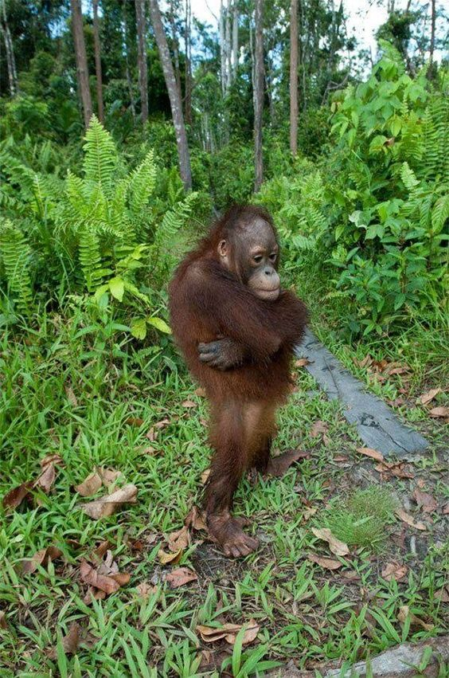

Describe your previous experiences with coding. What classes have you already taken where you were exposed
to HTML/CSS/JS? What parts of the class resonated with you? What parts were most confusing?
I have taken AP computer science course in high school that introduced me to javascript for a bit,
last semester, I have taken "Digital Dev: Creative Machine Learning" elective that introduced me to Python, AI, ML,
and I also took the Core 1 Interaction class. However, besides the Interaction class, I never learned how to web design so it is still all very new to me.
I found it interesting to be able to translate computer
languages into a visual structure of a website that has an endless possibilities of incorporating interactive elements as well.
However, the parts that were the most confusing were how to create a grid/box system that follows my initial design and resizing the visual elements.
How excited about learning code are you? Are you nervous about learning code? If so, why? What can I do in
this class to help reduce this anxiety?
I am very excited to learn coding as I believe design and technology is the future of creativity. I am not nervous to learn code,
as I will put in my most effort to learn.
How do you imagine coding fitting in with the rest of your design curriculum and career after college?
I believe coding will open doors to emerging technologies and designing innovatively dealing with algorithms, problem-solving,
and UI/UX.
What text editor do you prefer to use?
Visual Studio Code
Have you used GitHub before? Do you know what it is? Describe your understanding of GitHub.
I have for my Creative ML elective and Interaction 1 to write, share, read codes, and also to create a repository for my website to be shared to the public.
Describe the relationship between HTML, CSS and JavaScript. Try using a unique analogy to describe this
relationship. Bonus points for creative analogies.
HTML is like the human bones, it's the base structure that is necessary to create pages of the web. CSS is like the human skin, it's
covers on top of the bones. It's what makes every website have a unique style with different colors, typeface, how the content is displayed.
Javascript is the human actions, it allows dynamic actions to be done with the elements on the web.
Using each HTML heading tag, list your favorite foods ranked by importance (remember, there are six levels
of heading tags, `h1` through `h6`).
Seafood
Steak
Raspberry
Cake
Yogurt drink
Create an unordered list ( `ul` ) and link to some of your favorite graphic design or development related
websites. Include a paragraph ( `p` ) on each site describing why it is important to you.
https://www.macmillerswebsite.com/
It's a dreamy and dynamic website for an artist named Mac Miller with interactive elements such as typing your name and location, and
the background moving up and down following the user's cursor.
https://apps.ua/
It's an interactive website that simulates the cider making process with the user interacting by clicks and pressing on the keyboard.
http://species-in-pieces.com/
The website is created to raise awareness of the extinction of animals due to human intervention. It's a CSS based interactive
exhibition with smooth animations for each click.
Insert an image (`img`) that brings you joy to the page. Make sure the image includes `alt text` that
describes the image.

Insert a video embed into the page (for example, a YouTube or Vimeo embed tag of a video of your choosing).
Nest the following series of HTML tags inside each other, where each → represents a new level. Make sure to
maintain proper indentation.
`main`
→
`section`
→
`div`
→
`p`
→
`span`
No need to fill these tags with any actual content
Create an ordered list of the top 5 countries you’d like to visit. Within each country, create another
ordered list of the top cities you’d like to visit in that country. Maintain proper indentation and make sure
you nest your ordered lists properly.
England
London
Cardiff
Manchester
Edinburgh
Liverpool
Japan
Osaka
Yamanashi
Okinawa
Kyoto
Tokyo
Thailand
Bangkok
Chiang Mai
Koh Samui
Phi Phi Islands
Krabi
Portugal
Lisbon
Porto
Coimbra
Sintra
Cascais
Greece
Athens
Thessaloniki
Kastoria
Ioannina
Kalamata
Use `pre` tags to create a simple [concrete poetry](https://en.wikipedia.org/wiki/Concrete_poetry) version
of a Haiku or other poem you write. The poem should represent how you feel at this moment.
I am listening to a song
with a fasttempo
but now the song just skipped
to a
s l o w song
Write an HTML comment that is hidden from the browser, but displays in the code.
Create an unordered list of at least 6 musical artists you like to listen to. Add a class to each list item
that matches the genre of music of that artist.
J.I.D.
Kanye West
PinkPantheress
Calvin Harris
Childish Gambino
Cigarettes After Sex
Describe the difference between block, inline-block and inline elements.
Block is where the element will start on a new line and takes up the full width.
Inline-block is where the element will not create a new line but continue, it takes up only necessary amount in width.
And inline element,
Inline is like inline-block, but can set a width and height of element that it takes up.
Use CSS to style the musical genre classes you added in question 9. Give each genre a color and personality
using CSS.
Use any CSS knowledge you currently have to style your questionnaire in a unique way. Make sure to update
the font to something other than the default (use the font-family css property).
In a `script` tag, use the console.log function to write a message to the console (Cmd+Opt+U). Tell me
something interesting about yourself.
Add a `button` to your HTML file and make it do something when clicked using JavaScript